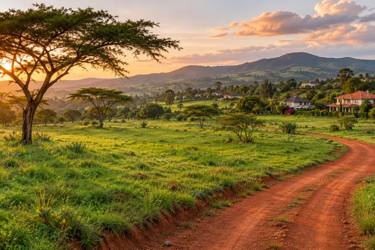

· Kenya

Why it matters
The official search route depends on the property and registry. Your advocate can interpret the record and advise on ownership, charges and restrictions. An independent visit can reveal access, occupation and boundary questions that require separate checks.
What to do next
Ask your advocate about the official route for the parcel, then brief a licensed land surveyor about boundaries and access. Have your advisers compare their findings before you rely on representations from a seller.
Original source: Digital land services